Home / Wall Decor & Gallery Walls
Wall Decor & Gallery WallsBohemian Wall Decor: 17 Ideas With Macramé, Baskets and Earthy Textures
Bohemian wall decor is about layers, not single pieces. These 17 boho wall ideas cover macramé hangings, woven baskets, rattan mirrors, limewash walls and hung rugs, with notes on where each one works, what to pair it with and what to watch for.
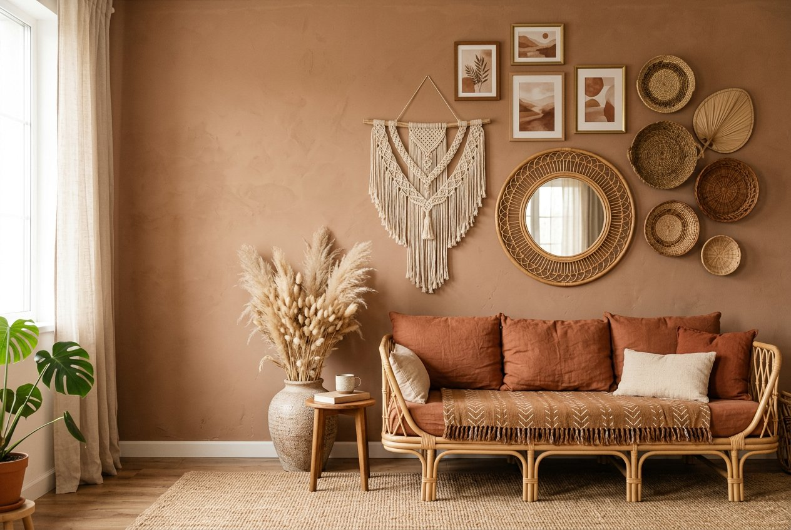
Bohemian wall decor is about layers. A single piece rarely does the job. A macramé hanging looks better next to a woven basket, a basket looks better against a warm clay wall, and the whole group looks better when it isn't perfectly matched. That's why boho walls feel collected over time instead of bought in one trip.
This guide covers 17 boho wall decor ideas, from large macramé wall hangings and woven wall baskets to rattan mirrors, limewash walls and a vintage rug hung like art. Each idea says where it works, what to pair it with and what to watch for. Many are renter-friendly, and most suit a boho living room, bedroom or entryway. Pick two or three that fit your space instead of trying all 17 at once.
What makes wall decor bohemian
Bohemian style leans on natural materials, handmade pieces and warm, earthy color. A few habits show up on almost every boho wall.
Start with the palette. Terracotta, rust, sand, cream, olive and warm brown form the base, with one darker accent such as deep green or black for contrast. Keep the wall color itself soft, so the decor can carry the pattern.
Then layer textures. Rope, rattan, jute, wood, dried grasses, linen and wool all work, and the more of them you mix, the more relaxed the wall looks. Aim for at least three different materials on one wall.
Finally, vary the shapes and sizes. Put round baskets next to a tall hanging, or an arched mirror above a straight ledge. Odd numbers of pieces usually look more natural than pairs. Leave some space between items so each one can be seen, because boho is relaxed, not crowded.
1. Hang a large macramé wall hanging
A big macramé wall hanging is the clearest sign of bohemian wall decor, and one oversized piece does more than several small ones. Hang it above a bed, sofa or console table, ideally about two-thirds the width of the furniture below. Cream cotton cord looks soft, and rust or sage cord adds color. Choose a thick wooden dowel and check that the knots are tight, since loose cord sags after a few weeks. A removable hook works for a light piece, but use a proper anchor for a heavy one.
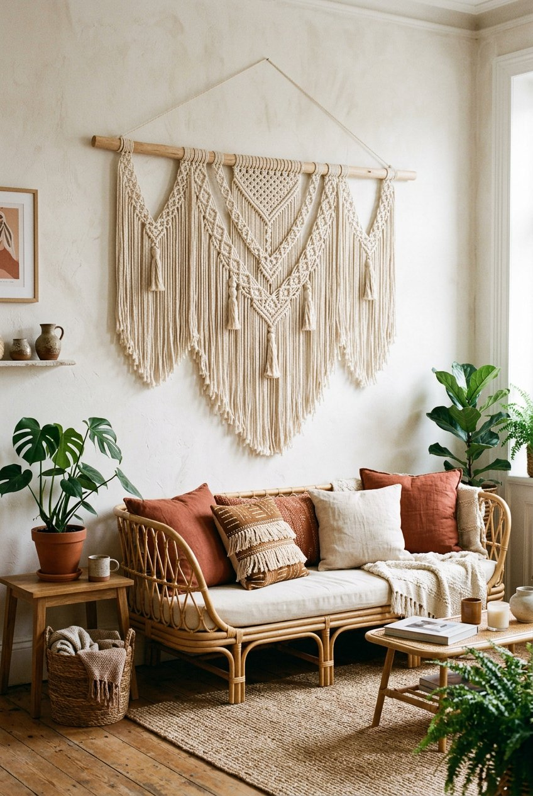
2. Make a cluster of woven wall baskets
Flat woven baskets are cheap, light and good looking, which is why they show up on so many boho walls. Group five to seven in mixed sizes, and mix light seagrass with darker rattan and a few patterned black-and-natural ones. Start with the largest basket near the middle and build outward, leaving small, uneven gaps. Use basket hooks or removable adhesive hooks. Lay the whole arrangement on the floor first, so you can settle the layout before you touch the wall.
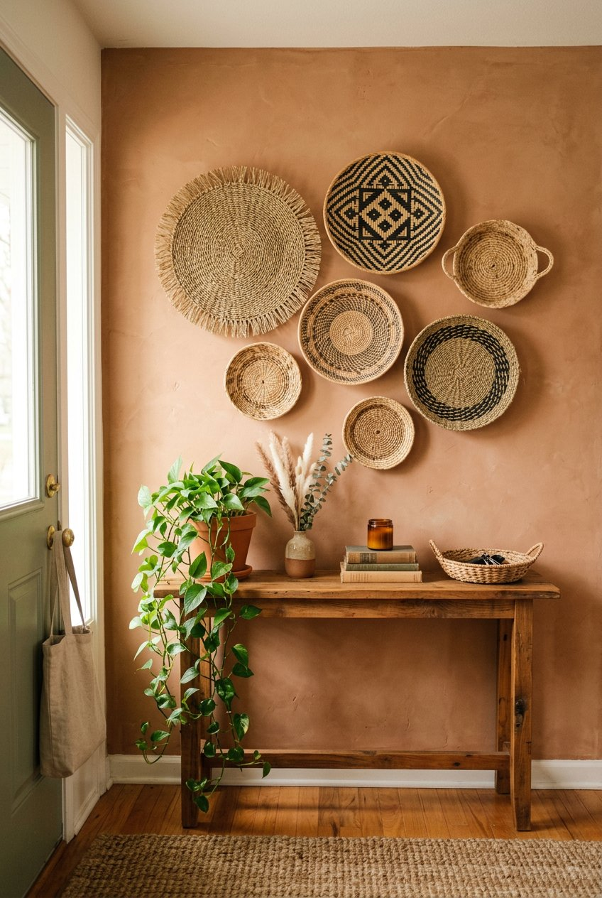
3. Build a boho gallery wall with mixed frames
A bohemian gallery wall mixes frame materials on purpose: natural wood, rattan, brass and a few painted frames. Fill them with earthy art such as line drawings, botanical prints, terracotta abstracts and black-and-white photography. Keep one color running through the group, like warm brown or cream mats, so the mix reads as a collection. Center the group around 57 inches (145 cm) from the floor. Plan the layout on paper first, since it's much easier to move paper than to patch nail holes.
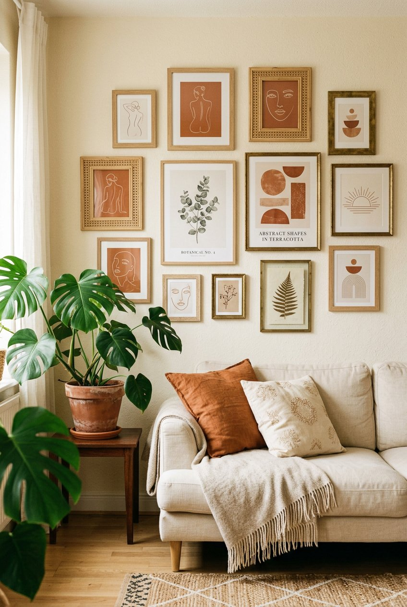
4. Hang a woven tapestry
A woven tapestry covers a lot of wall quickly and adds softness to a room full of hard surfaces. Look for natural fibers like cotton, wool or jute, in stripes, geometric shapes or faded florals in earthy tones. Hang it from a wooden rod or a row of clips, and leave the edges slightly uneven. Behind a bed, it works like a headboard. Keep it away from candles and heaters, and air it out now and then, since textile walls collect dust.
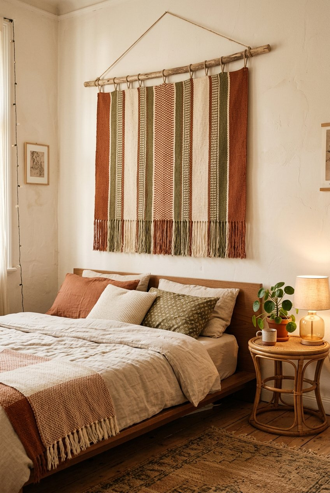
5. Use a rattan or cane mirror
A round or sunburst rattan mirror gives you wall decor and extra light in one piece. The woven frame brings texture, and the glass bounces daylight around, which helps in a small room. Hang it opposite a window if you can, at eye level. In an entryway, put it above a bench with a woven basket underneath. For a more layered look, hang a smaller mirror slightly off center, beside a macramé piece instead of in front of it.
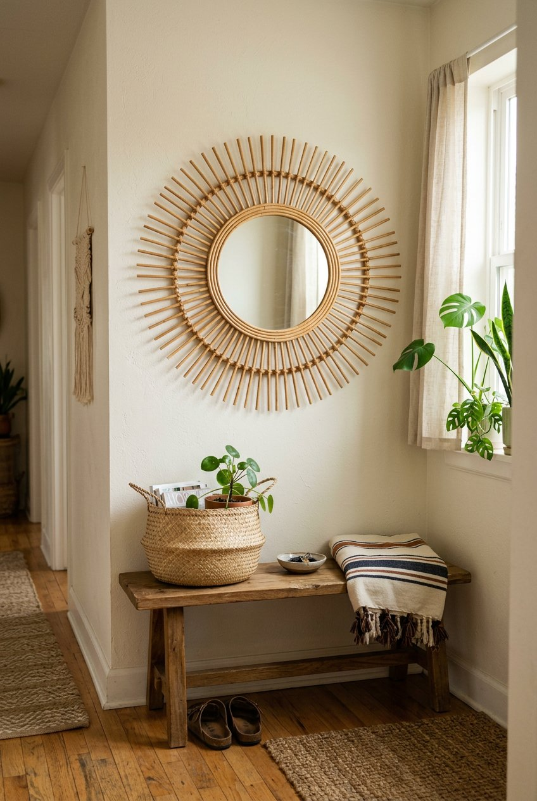
6. Display dried pampas grass and dried flowers
Dried botanicals add height and softness without any watering. Hang a bundle of pampas grass upside down from a ribbon, or mount a few dried stems in a long, narrow frame. Wheat, lavender, eucalyptus and bunny tails all dry well and keep muted colors. Keep them out of direct sun, where the color fades, and shake them outdoors now and then, because pampas sheds. If anyone in the house has allergies, test a small bundle first.
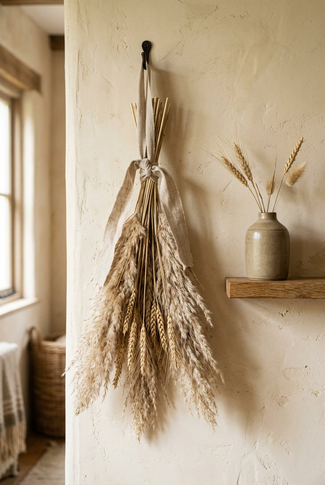
7. Add a floating shelf with trailing plants
A wall shelf lets you mix art and living things, and trailing plants suit the boho look. Put pothos, string of hearts or ivy in a terracotta or woven cover pot, and let the vines fall past the edge. Add a small stack of books, a candle and a ceramic bowl. Use a solid wood shelf with brackets rated for the weight, because wet soil is heavier than it looks, and keep the shelf away from the heat of a radiator.
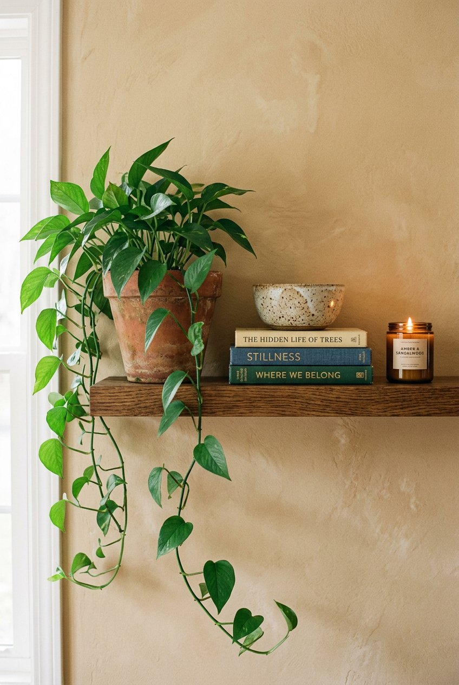
8. Hang large earthy abstract art
If you like boho but find macramé too busy, abstract art in earth tones gives you the palette with less fuss. Look for arches, sun shapes and soft color blocks in terracotta, clay, sand and sage. Go large, and frame it in natural wood. One big piece above a sofa or bed can anchor the whole room, and you can add baskets or a hanging around it later as the wall fills in.
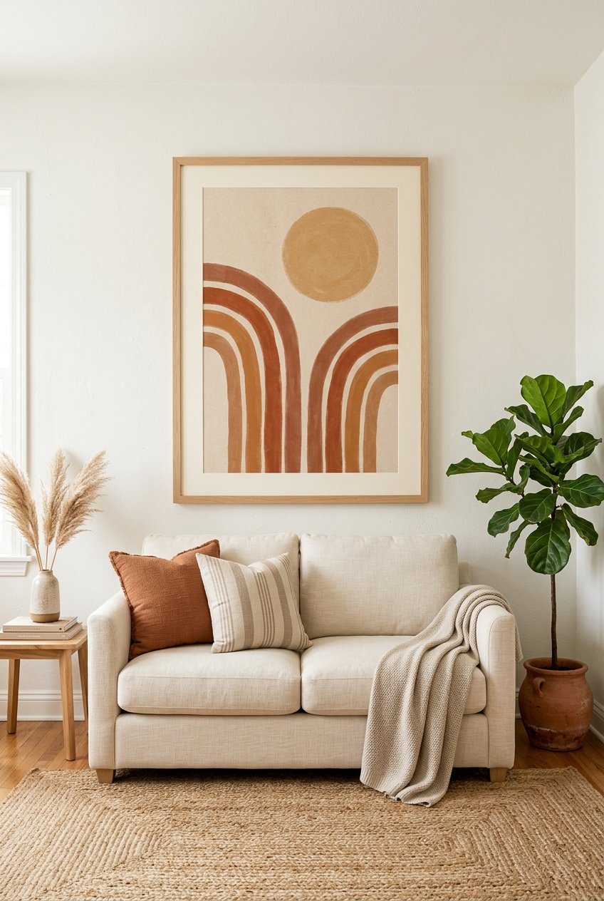
9. Paint a terracotta arch behind the bed or sofa
A painted arch gives you a bold shape for the price of a sample pot. Mark the arch with a string and pencil, tape the edge with painter's tape and fill it in with terracotta, clay or warm sand. Put it behind a bed, a console or a daybed, and keep the rest of the wall soft white or cream. It works like a headboard in a rental, as long as your lease allows painting, and you can paint over it when you move out.
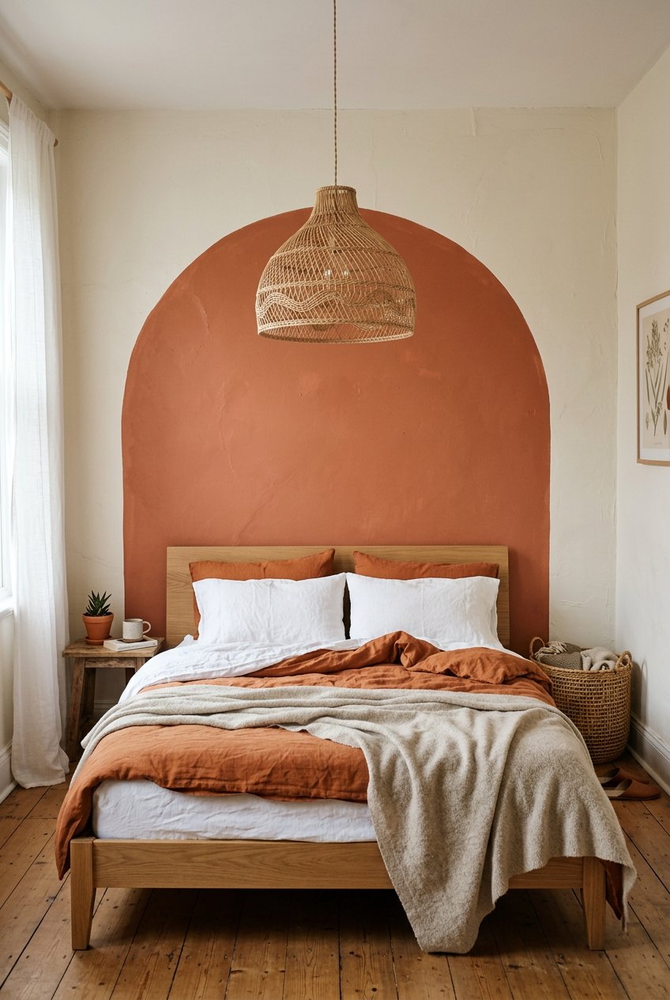
10. Drape a wood bead garland
Wooden bead garlands are simple and cheap, and they add warmth to a plain wall. Drape one from a single nail so it falls in a soft curve, or hang it across the top of a frame or mirror. Natural wood beads with a few terracotta or cream ones suit a neutral palette. Long strands can also hang straight down beside a window or a mirror. Keep them out of reach of small children and pets, because they're easy to pull down.
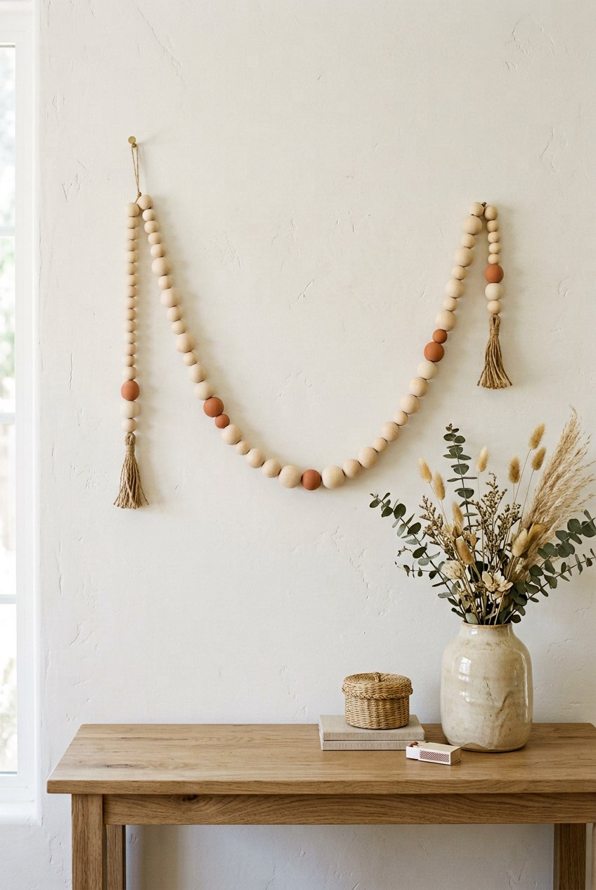
11. Hang woven fans or raffia wall pieces
Large woven fans and raffia wall hangings add shape and texture, and the lightweight versions suit rentals. Hang one on its own as a focal point, or pair two in different sizes. Straw tones work with almost any earthy palette. They're also a good fix for an awkward blank spot, like the space above a door or a corner that nothing else fits. Check that the piece sits flat, since some fans curve forward and need a second hook to stay level.
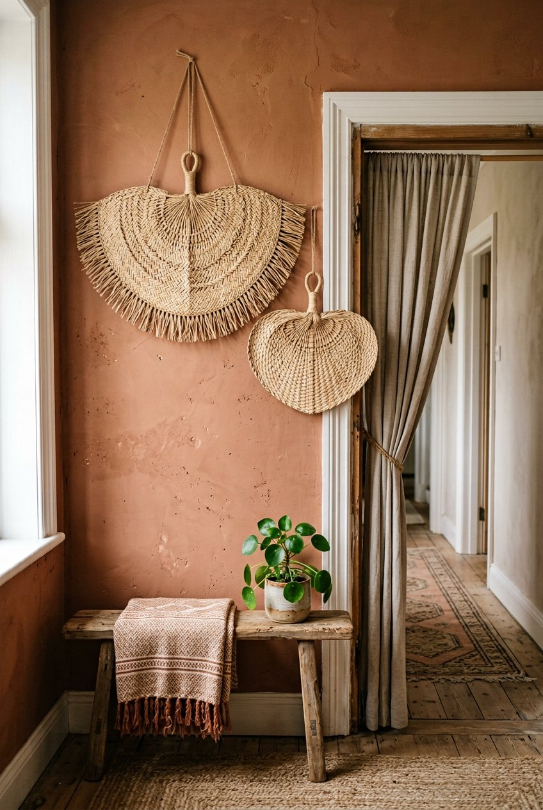
12. Add a moon phase wall hanging
Moon phase hangings are a boho favorite. Look for wood bead or ceramic versions in cream, brown or black, strung on a branch or dowel. They suit the wall above a bed or a desk and add a quiet, slightly mystical touch without much color. Keep the rest of the wall plain so the row of moons stands out, and hang it with the full moon in the center for a balanced look.
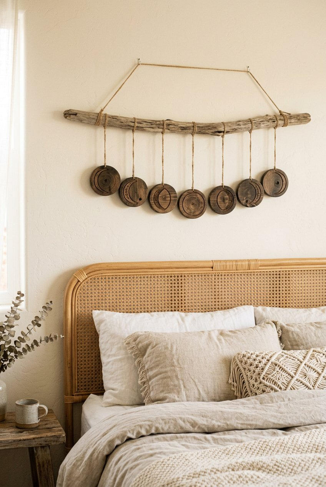
13. Try a limewash or textured plaster wall
Texture doesn't have to hang on the wall. Limewash gives a soft, cloudy finish in warm clay, sand or pale terracotta, and it makes a good backdrop for baskets and macramé. It's a mineral-based paint that works best on porous surfaces like plaster, brick or unpainted drywall, so follow the product instructions if your wall is already painted. Do one wall, practice on a test board first, and expect a hand-painted, uneven look. That unevenness is the point.
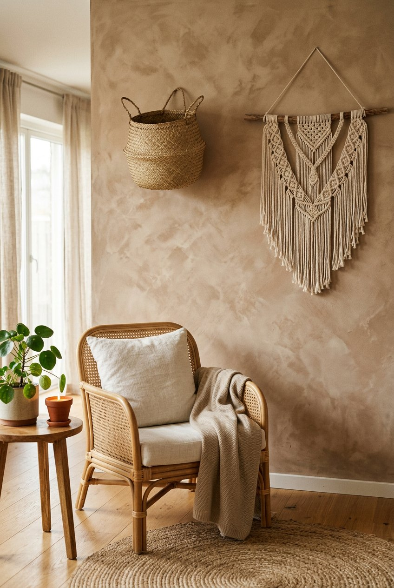
14. Hang a vintage rug or kilim on the wall
A vintage rug makes a strong wall hanging, and its worn colors suit boho rooms. Kilims and flatweaves are lighter than pile rugs, which makes them easier to hang. Use a rug hanging kit, or sew a strip of hook-and-loop tape along the top, instead of putting nails through the fibers. Hang it above a bed or a sofa, and vacuum it gently once in a while. Check thrift stores and flea markets before you buy new.
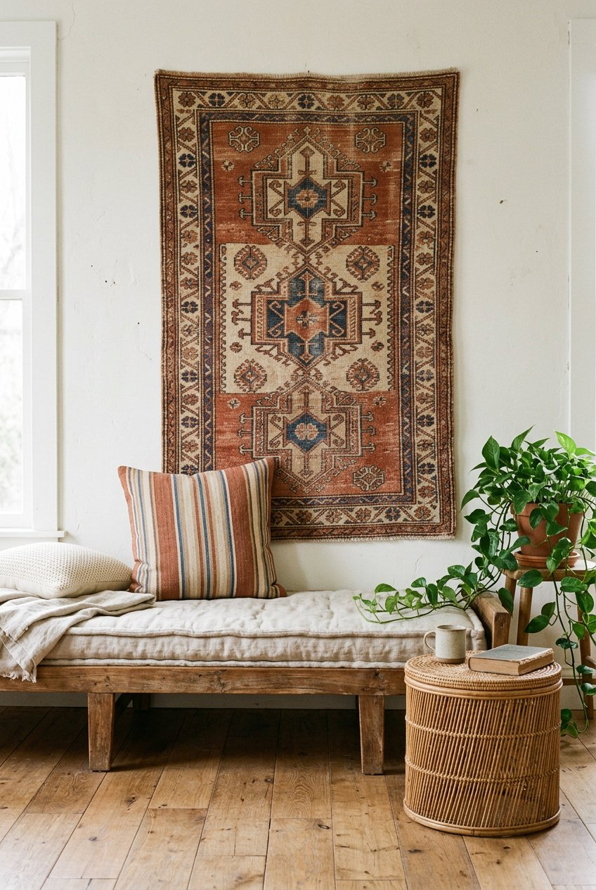
15. Bring in African-inspired textiles
Pinterest's 2026 trend report called out Afrohemian decor, which mixes African textiles with bohemian styling. A framed piece of mudcloth or adire cloth brings in strong pattern and a story. Frame the fabric under glass or stretch it over a canvas frame to keep it flat. Choose one patterned piece and let the rest of the wall stay earthy and quiet, so the pattern is the focus. When you can, buy from makers or sellers who say where the cloth was made.
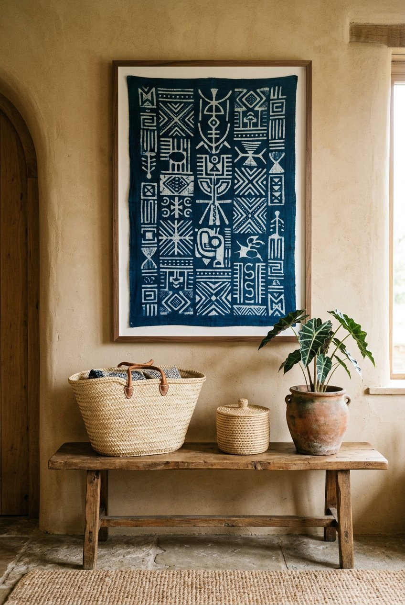
16. Style a picture ledge with layered art
A picture ledge lets you layer art without hammering a new nail each time you change your mind. Lean two or three pieces of different sizes against the wall, overlap them a little, and add small objects like a brass candleholder, a dried stem or a ceramic bowl. Mix framed prints with an unframed canvas for variety. Swap items with the seasons, and keep one stretch of the ledge empty so it doesn't look crowded.
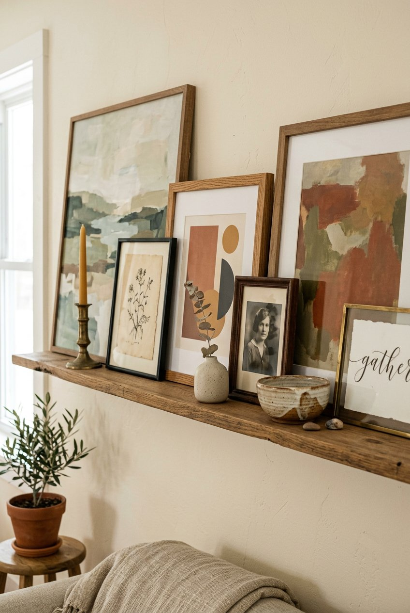
17. Finish with a woven wall sconce
Lighting counts as wall decor too. A plug-in wall sconce with a rattan or woven shade casts patterned warm light, and it works in rentals because it needs no wiring. Choose a warm bulb, around 2700K, to match the earthy palette, and tuck the cord into a cord cover painted the wall color. Put it beside a bed, a mirror or a reading chair, where the light is both useful and decorative.
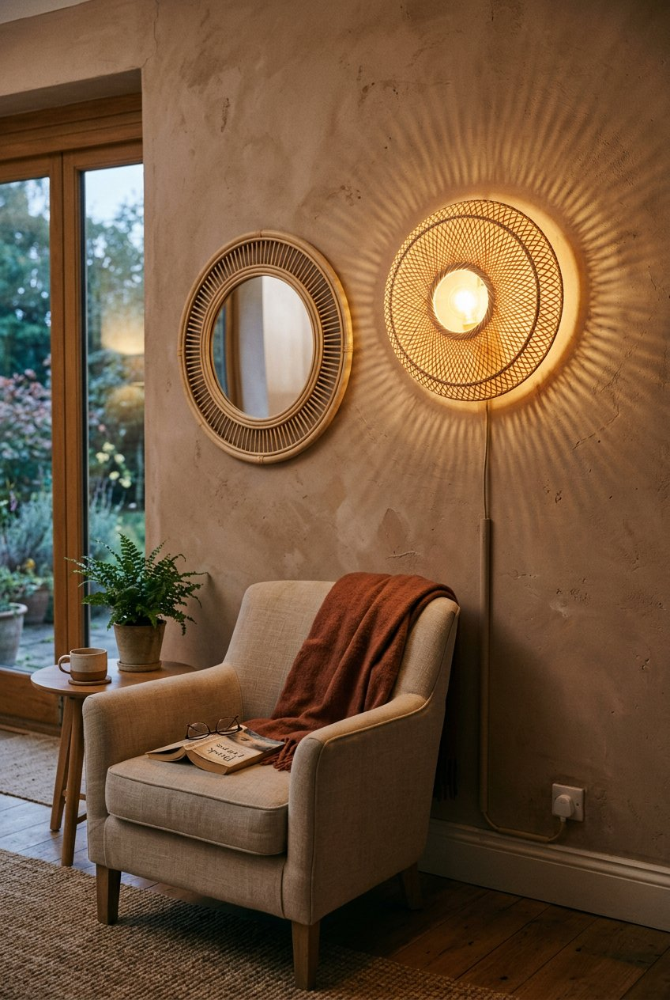
How to arrange a boho wall
Lay everything on the floor first. Arrange the pieces in the shape of the wall space, move them around until the group feels balanced, and take a photo so you can copy it. Hang the largest piece first, then work outward.
Match the hardware to the weight. Light baskets and fabric work on removable hooks. Mirrors, heavy frames and shelves need screws and proper wall anchors, or a stud. Check the weight rating on every hook you buy.
Watch the spacing. Two to three inches between pieces keeps a group together, and bigger gaps make the pieces look unrelated. Keep the center of the whole group near eye level, around 57 inches (145 cm) from the floor, and hang art close enough to the furniture below that the two read as one group.
In a rental, lean larger pieces on shelves or dressers, use removable hooks for light items, and hang fabric or rugs with tension rods or hook-and-loop strips instead of nails. Check your lease before painting.
Bohemian wall decor mistakes to avoid
- Too many small pieces. A wall of tiny items looks like clutter, so go big and add one or two small things.
- Matching everything. If every basket is the same size and color, the wall looks like a store display.
- Ignoring the palette. Earthy doesn't mean any color. Stay with warm neutrals and one or two accents.
- Hanging too high. Center groups near eye level, around 57 inches from the floor.
- Skipping contrast. A cream hanging on a cream wall disappears, so add a dark frame or a clay-colored wall behind it.
- Filling every inch. Leave blank wall around groups so the pieces have room.
What is bohemian wall decor?
Bohemian wall decor layers natural materials, handmade pieces and earthy colors. Typical items include macramé hangings, woven baskets, tapestries, rattan mirrors and dried botanicals. The look is relaxed and collected, not matched.
How do I hang macramé on a wall?
Use a nail, screw or removable hook rated for the piece's weight, and center the dowel over the spot you want. For a wide hanging, use two hooks to keep it level.
What colors work for boho wall decor?
Terracotta, rust, sand, cream, olive and warm brown form the base. Add one darker accent such as deep green or black, and paint the wall itself a soft neutral so the decor stands out.
Can I do boho wall decor in a rental?
Yes. Baskets, tapestries, a hung rug, a rattan mirror on a hook, a picture ledge and a plug-in sconce all work with little or no damage. Use removable hooks for light pieces, and check your lease before painting.
Save this guide for later. Pin the image below to your boho home decor board.
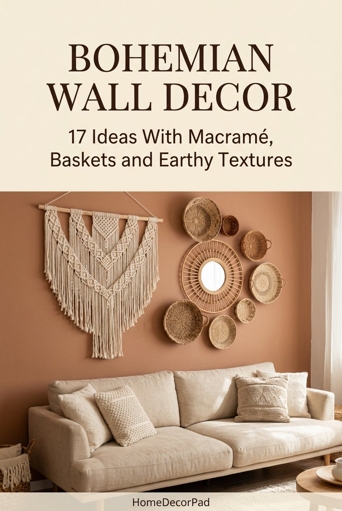
Where to start
Pick one large piece, such as a macramé hanging or a rattan mirror, and hang it first. Add two or three baskets or a picture ledge a week later, once you can see what the wall still needs. For more styles, see our wall decor series or the kids jungle wall decor guide.
Save this idea for laterPin the graphic below to your wall decor & gallery walls board so you can find it when you are ready to shop.
Copy-and-paste pin title & description
Pin title: Bohemian Wall Decor: 17 Ideas With Macramé, Baskets and Earthy Textures
Pin description: 17 bohemian wall decor ideas with macramé hangings, woven baskets, rattan mirrors and earthy textures, plus renter-friendly tips for any boho room. #bohemiandecor #bohowalldecor #walldecor


Join the conversation
Comments
Anonymous on top — no login, no GitHub. GitHub comments below.
No comments yet — be the first!
Leave a comment — no login needed